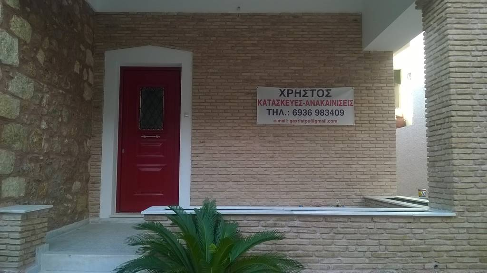
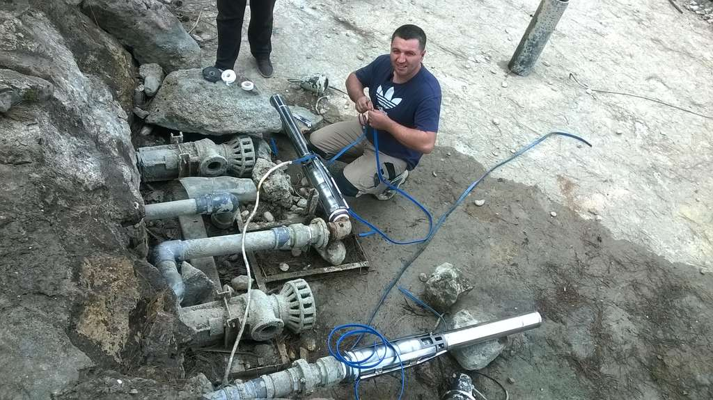
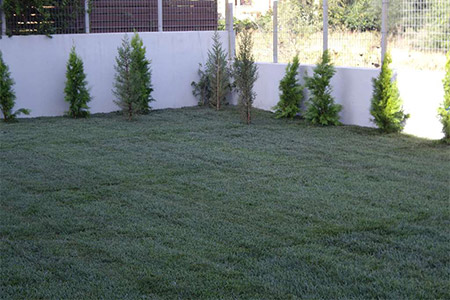

Κατασκευή
Ανέγερση κτηρίων και κατοικιών από τα θεμέλια έως την παράδοση, με μελέτη και τεχνική επίβλεψη.
- Οικοδομικές άδειες
- Επίβλεψη μηχανικών
- Τήρηση χρονοδιαγράμματος
Κατασκευή · Ανακαίνιση · Αντιπαροχή
Κατασκευή, ανακαίνιση, αντιπαροχή, διαμόρφωση περιβάλλοντος χώρου, έργα δημοσίου, οδοποιία και ενεργειακή αναβάθμιση.
Η εταιρεία
Η εταιρεία TOPCIU Ο.Ε. ιδρύθηκε το 2010 με σκοπό την κατασκευή δημοσίων και ιδιωτικών τεχνικών έργων, με έδρα τη Νέα Μάκρη Αττικής.
Στελεχώνεται από πολιτικό μηχανικό και ηλεκτρολόγο μηχανικό, διαθέτει ιδιόκτητο μηχανολογικό εξοπλισμό και έχει εμπειρία στην κατασκευή σύνθετων τεχνικών έργων, ιδιαίτερα στις κατηγορίες των κτηριακών, της οδοποιίας, των υδραυλικών και των ενεργειακών παρεμβάσεων.
Στην κατοχή της εταιρίας βρίσκεται εργοληπτικό πτυχίο:
Οι υπηρεσίες μας
Από την άδεια και την επίβλεψη μέχρι τα τελειώματα, η εταιρία συντονίζει ειδικότητες και συνεργεία ώστε το έργο να παραδίδεται χωρίς αποσπασματικές λύσεις.
Ανέγερση κτηρίων και κατοικιών από τα θεμέλια έως την παράδοση, με μελέτη και τεχνική επίβλεψη.
Ανακαινίσεις κτηρίων, κατοικιών και καταστημάτων με επίβλεψη μηχανικών και εργοδηγών.
Αξιοποίηση οικοπέδων με σύστημα αντιπαροχής, από την εκτίμηση μέχρι την παράδοση του έργου.
Χωματουργικά, φύτευση, χλοοτάπητες και αυτόματο πότισμα με μηχανήματα έργων.
Ανάληψη και εκτέλεση δημοσίων έργων με τήρηση προδιαγραφών και συμβατικών όρων.
Θερμομονώσεις, κουφώματα και συστήματα θέρμανσης για μείωση της κατανάλωσης ενέργειας.
Πώς δουλεύουμε
Η φιλοσοφία είναι πρακτική: ξεκάθαρο συμφωνητικό, σωστά εργαλεία, εξειδικευμένο τεχνικό προσωπικό και τήρηση χρονοδιαγραμμάτων.
Καταγραφή χώρου, αναγκών και τεχνικών περιορισμών.
Λύσεις, υλικά, χρόνος και στάδια εργασιών.
Συντονισμός ειδικοτήτων και καθημερινή τεχνική οργάνωση.
Ολοκλήρωση με εγγύηση καλής εκτέλεσης εργασιών.
Ενδεικτικά έργα
Το νέο site χρησιμοποιεί υλικό από το υπάρχον portfolio της Topciu, ώστε η εικόνα να μένει κοντά στη δουλειά της εταιρίας.

Οργάνωση συνεργείων για ολοκληρωμένες παρεμβάσεις.


Μιλήστε με την Topciu Construction για αυτοψία και τεχνική πρόταση.